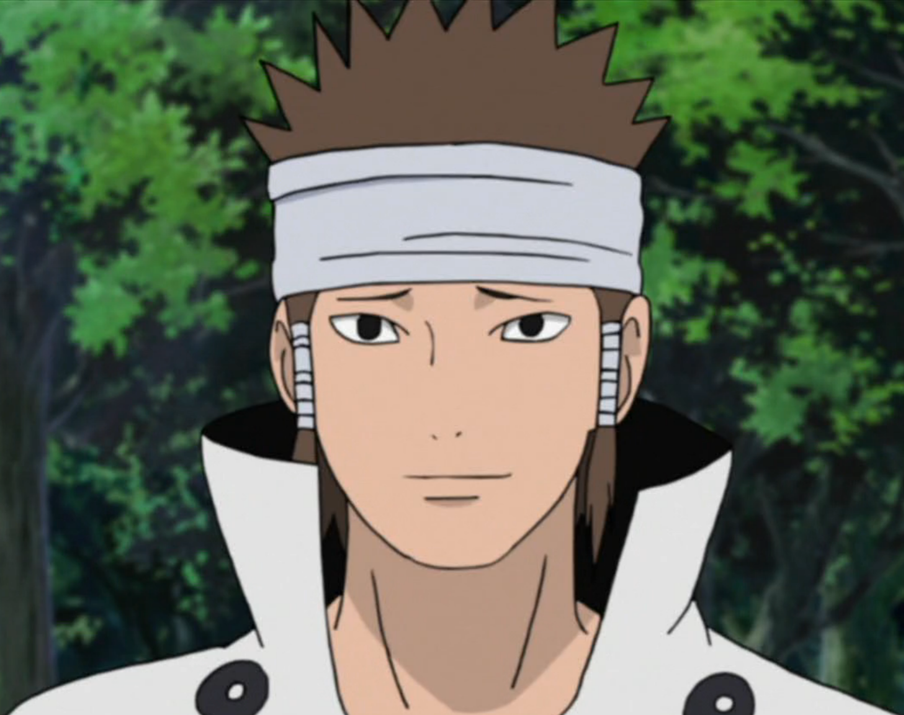
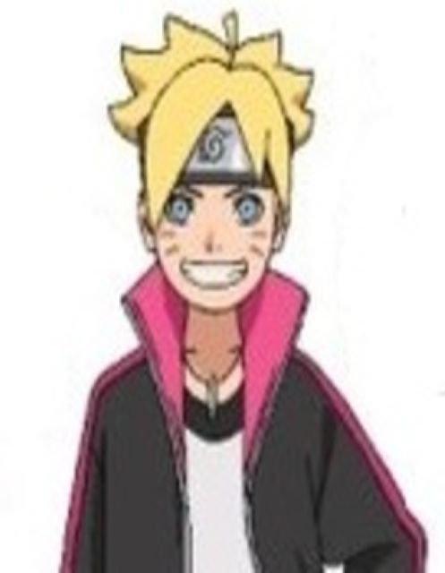
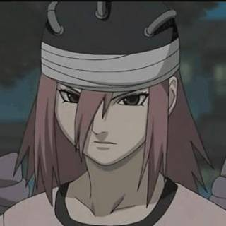
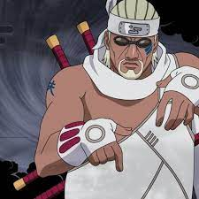

Characters
Suigetsu

Suigetsu was a member of Sasuke's renegade group consisting of himself, Suigetsu, Karin, and Jugo. Of the quartet, Suigetsu was the self-styled comedian. He had plenty of sarcastic lines and made every effort he could to get under Karin's skin.
The above line was especially funny coming from Suigetsu, as the audience got the distinct impression that he probably wasn't a true believer in Sasuke's dream. It was even funnier in the moment, as he made a decisive gesture with a spoon he was using at the time.
Sai Yamanaka

Sai Yamanaka (山中サイ, Yamanaka Sai) is the Anbu Chief of Konohagakure's Yamanaka clan. Prior to this, he was a Root member. As per standard Root training, Sai was conditioned to remove all emotions and as such, had difficulty connecting with others. When he is added to Team Kakashi as a replacement for the rogue Sasuke Uchiha, Sai begins to learn more about people's feelings and tries to develop his personality and identity by forming genuine bonds and rediscovering the emotions he was taught to suppress..
Anko Mitarashi

The proctor of the survival leg of the Chuunin exams, she goes through her enemies like a blazing inferno. She was once tutored by Orochimaru, but was abandoned by him when she refused to follow his evil path. Anko Mitarashi is a Jonin of the Hidden Leaf Village. She was a proctor of the survival portion of the Chunin exams. She was also a former student of longtime series antagonist, Orochimaru, but did not share his vision and refused to follow him further.
Chiriku

Chiriku is a Fire Temple monk, formerly a member of the “12 Guardian Ninjas” of the Lord of the Fire Land. There he will meet Asuma Sarutobi, son of the third Hokage. Their mission was to escort and protect the Daimyo of the Land of Fire.
Today he lives in the Temple of Fire with his disciples. He took under his wing a young man named Sora, the son of one of the 12 deceased guardian ninjas. His head having been put on a price of 30 million ryos, he was assassinated by Kakuzu and Hidan during a fight at the Fire temple. After this clash, the Fire Temple was destroyed. Hidan and Kakuzu then returned the body to collect the bounty. And thus fill the crates of Akatsuki.
ten tails

This Ten-Tails (十尾, Jūbi) is the combined form of Kaguya Ōtsutsuki and the God Tree, created to reclaim the chakra inherited by her sons, Hagoromo and Hamura. It is regarded as the progenitor of chakra, and is tied to the legend of the Sage of Six Paths and the birth of shinobi. To end the beast's rampage, the Sage became the Ten-Tails' jinchūriki and later split its chakra into the nine tailed beasts to prevent it from causing further harm. Centuries later, its revival became the objective of Madara and Obito Uchiha, who both sought to become the beast's jinchūriki in order to further their objectives.
Asura
Asura Ōtsutsuki (大筒木アシュラ, Ōtsutsuki Ashura) was the younger son of Hagoromo Ōtsutsuki. Though not the obvious choice to most, he would go on to inherit his father's teachings, and as a result, would have to clash bitterly against his elder brother Indra. Asura is also credited with being the progenitor of both the Senju and Uzumaki clans.
With the power entrusted to him by his father, Asura gained access to the Six Paths Senjutsu, allowing him to augment himself and his various techniques. In this state, he could fly and manifest a giant three-faced, six-armed avatar, Six Paths: Kunitsukami.
Inuzuka Hana

Hana is a kunoichi from Konoha village. She is Kiba's sister and Tsume's daughter
Hana also specializes in animal medicine: she is a veterinarian. His companions are 3 dog brothers: Les Trois Frères Haimaru.
Izumi Uchiha

Izumi was the daughter of Hazuki Uchiha. Unlike her mother, Izumi's father was not an Uchiha.During the Nine-Tailed Demon Fox's Attack, her father died while protecting her.From the grief brought on by his death, as well as feelings of guilt that he would not have died had Izumi been stronger,Izumi eventually awakened her Sharingan. She and her mother afterwards rejoined the Uchiha clan.
Izumi enrolled in Konoha's Academy a few years later.Like other girls her age, Izumi developed a crush on Itachi Uchiha, a boy in the class next to hers.As such, she tried to talk with him during school breaks, walk home with him after lessons, and defend him from their peers' criticism. Itachi initially took the same disinterest in Izumi that he had in all the other girls until discovering that she had the Sharingan, which he himself had yet to awaken.He afterwards became warmer to her whenever their paths crossed.
Fūka

Fūka was portrayed as a seductive vixen as a way to lure her prey in and kill them with an Execution by Kiss.
She would further speed up the process by giving her targets a choice between a French or traditional kiss. Her most preferable victims were those with a natural affinity for wind chakra. She took great pride in her appearance and would become infuriated when any harm came to her physical being, especially her hair, the very casing of her soul. During her second fight against Naruto Uzumaki, she showcased a sadistic side when she delighted in Naruto's anguish. She has shown an intelligent side as seen when she thought that Sora and Naruto were connected somehow.
Rôshi

Rôshi was the last Jinchûriki of Yonbi, the 4-tailed demon. He was killed by Kisame Hoshigaki, a former member of the Akatsuki, who aimed to reunite all the Biju.
Rôshi will be resurrected later during the Fourth Great Ninja War by Kabuto Yakushi. He will fight Bee and Naruto.
Suigetsu
Suigetsu was a member of Sasuke's renegade group consisting of himself, Suigetsu, Karin, and Jugo. Of the quartet, Suigetsu was the self-styled comedian. He had plenty of sarcastic lines and made every effort he could to get under Karin's skin.
The above line was especially funny coming from Suigetsu, as the audience got the distinct impression that he probably wasn't a true believer in Sasuke's dream. It was even funnier in the moment, as he made a decisive gesture with a spoon he was using at the time.
Boruto Uzumaki
Boruto Uzumaki (うずまきボルト, Uzumaki Boruto) is a shinobi from Konohagakure's Uzumaki Clan and a direct descendant of the Hyūga clan through his mother. Initially nonchalant in his duties as a member of Team 7 and resentful of his father and the office of Hokage because it left him with no time for his family; Boruto eventually comes to respect and reconcile with his father and his role as Hokage, yet vows to become like his mentor Sasuke Uchiha — a support system for the Hokage and the village.
Ebisu

Specializes in the private training of Ninja, and is often referred to as being a closet pervert. He is one of the sensei who's trained Konohamaru.
Yukimaru

Yukimaru is a young orphan who became one of Orochimaru's test subjects, due to his ability to partially control the Three-Tails.
Yukimaru lived with his mother in a village that was attacked by Orochimaru's followers when Yukimaru was a child.
Yamato

Yamato is a very discreet, cautious, careful and well prepared person. He projects a calm, stoic demeanour in stressful situations. He takes his missions very seriously, even insisting on being referred to by whatever his current codename
Yamato is one of the main supporting characters in the Naruto anime/manga series and the Boruto: Naruto Next Generations anime/manga series. He is an ANBU in the service of Konohagakure. Because of his unique jutsu, he is added to Team Kakashi as a temporary for Kakashi Hatake. Though Kakashi eventually returns to the team, Yamato stays on to provide assistance when he's needed.
Hanabi Hyuga

Hanabi is the younger sister of Hinata. She plays an important role in The Last: Naruto the Movie. Her father is Hiashi Hyuga and is auntie to Hinata's children, Boruto and Himawari. Her cousin is Neji Hyuga. Naruto Uzumaki is her brother-in-law.
Naruto Uzumaki

Naruto Uzumaki is the main protagonist in the popular manga and anime series Naruto. He is a cheerful, hyperactive, strong-willed, and occasionally simple-minded young shinobi from the village of Konoha (or Leaf Village).
Since Naruto has the Nine Tails Fox sealed inside him, he is able to use the Fox's chakra, which is much greater than the average human. Initially Naruto and the Fox hated each other, and would rarely grant Naruto his power unless they were going to die. Eventually, they become friends, and Naruto then refers to the fox by his name, Kurama. At this point, Naruto can use Kurama's chakra at will.
Sasuke Uchiha

Sasuke Uchiha (うちはサスケ, Uchiha Sasuke) is one of the last surviving members of Konohagakure's Uchiha clan. After his older brother, Itachi, slaughtered their clan, Sasuke made it his mission in life to avenge them by killing Itachi. He is added to Team 7 upon becoming a ninja and, through competition with his rival and best friend, Naruto Uzumaki, .
Tsunade

Tsunade is a kunoichi from the Hidden Leaf Village and posses Monstrous physical strength, extremely advanced healing and regenerative techniques, physician/surgeon level of knowledge of the human body and great Chakra control. At once formed part of "The Legendary Sannin" along with Jiraiya and Orochimaru, and under the tutelage of the Third Hokage. Currently, she has become the Fifth Hokage of The Hidden Leaf Village. Her grandparents are revealed to be Hashirama Senju and Mito Uzumaki.
Tsunade's trademark ability is her inhuman strength, which is derived from her excellent chakra control. By storing chakra and releasing it at the point of contact, she can enhance her strength to the point where she can break through boulders with her bare hands. She is also an extremely talented Medical-nin, and can heal wounds that most others would consider impossible. She went as far as to use the Shadow Seal: Release to store her chakra in her forehead to Creation Rebirth, a technique that releases the chakra to rapidly regenerate the cells in her body to heal any wound. It gives her a "immortality" in battle that even Orochimaru envied. However, because of the rapid cell regeneration, the technique shortens her life similar to the Four-Tailed transformation, however more controlled. Because of the risk associated with the technique, Tsunade has made the choice to only use Creation Rebirth in extremely desperate situations.
Jirobo

A ninja from The Hidden Sound Village and member of The Sound Five.he was the physically strongest member of the Sound Four, but the weakest overall. According to the other members of the group, nevertheless, he was a formidable opponent. Furthermore, Shikamaru stated that Jirōbō's prowess was at jōnin-level. In the anime, another testament to his prowess was him being chosen for reincarnation by Kabuto.
Hanare
Hanare (ハナレ, Hanare) is a kunoichi from the Jōmae Village.
As a young child, Hanare was said to be very lonely since she had never known her family or seen her own village. She was trained from an early age in the art of espionage. One day, she was found crying in a place near her village by the young Kakashi, who spotted her and carried her on his back. He then explained to her that she can look up to the clouds above and find her way. They both were then seen by a ninja from Hanare's village and Kakashi put her down on her feet, said goodbye and left. She was then excited that someone like Kakashi was able to help her in her life. At one point, she met Kakashi Hatake and developed romantic feelings for him. Hanare, a spy from Jōmae Village from the Land of Keys, was summoned to infiltrate the Land of Fire and to investigate Konoha affairs. She was captured by Anbu and placed in the Honesty Room to be tortured.
Fūka
Fūka was portrayed as a seductive vixen as a way to lure her prey in and kill them with an Execution by Kiss.
She would further speed up the process by giving her targets a choice between a French or traditional kiss. Her most preferable victims were those with a natural affinity for wind chakra. She took great pride in her appearance and would become infuriated when any harm came to her physical being, especially her hair, the very casing of her soul. During her second fight against Naruto Uzumaki, she showcased a sadistic side when she delighted in Naruto's anguish. She has shown an intelligent side as seen when she thought that Sora and Naruto were connected somehow.
Mizuki

The first-ever person whom Naruto faced in a battle in order to know his power and also get to know about his own ninja way. He thrashed him in the battle against him while saving Iruka Umino his sensei in his elementary Training Academy
Mizuki duped Naruto Uzumaki into stealing Konoha's Scroll of Seals for him. Originally, Mizuki had the plan set up to have Naruto as a scapegoat and kill him to hide the truth of his deception and secretly leave the village with the scroll in his possession. However, Mizuki's plan is derailed when Iruka found Naruto first and decided to reveal Naruto's identity as the Nine-Tails's jinchūriki to ensure he runs off disillusioned. However, overhearing Iruka standing up for him, Naruto comes to his teacher's aid and uses the Multiple Shadow Clone Technique he had learned from the scroll to beat Mizuki unconscious for harming Iruka.
The Demon Brothers

Naruto's first battle against non-Konoha ninja happened at the start of the Land of Waves Escort Mission arc. Two allies of Zabuza waited outside of Konoha in order to ambush Tazuna, who was being escorted by Team 7.
These were two former Hidden Mist shinobi, known as the Demon Brothers, who had defected from their village in order to join Zabuza's coup. Kakashi and Sasuke were able to easily dispose of the Demon Brothers and keep Tazuna alive. They were then tied up next to a tree and left to be arrested. We never actually see the Demon Brothers being arrested in the manga and escaping from being tied up is one of the most basic parts of ninja training. Were the Demon Brothers able to escape? If so, did they choose to abandon Zabuza? Why did they never reappear in the story afterward?
Madara Uchiha

Madara Uchiha was the legendary leader of the Uchiha clan. He founded Konohagakure alongside his childhood friend and rival, Hashirama Senju, with the intention of beginning an era of peace.
When the two couldn't agree on how to achieve that peace, they fought for control of the village, a conflict which ended in Madara's death. Madara, however, rewrote his death and went into hiding to work on his own plans. Unable to complete it in his natural life, he entrusted his knowledge and plans to Obito shortly before his actual death. Years later, Madara would be revived, only to see his plans foiled and ultimately, and finally, realising the error of his ways and making amends with Hashirama before his final death.
Tayuya
A kunoichi from The Hidden Sound Village and a member of The Sound Five.
Tayuya is one of Orochimaru's Sound Four Ninja. She is foul mouthed and ill tempered yet very powerful. Her only weapon is a flute which she can use to summon three giant demons known as the Doki. Tayuya is also very intelligent and can think up excellent strategies and tactics.
Kagura

The main villain of Clash of Ninja Revolution 2, she's an ex-ANBU member.
Itachi Uchiha

Itachi Uchiha is a fictional character in the Naruto manga and anime series created by Masashi Kishimoto.
Itachi is the older brother of Sasuke Uchiha, and is responsible for killing all the members of their clan, sparing only Sasuke. He appears working as a terrorist from the organisation Akatsuki and serves as Sasuke's greatest enemy. During the second part of the manga, Itachi becomes involved in attacks to ninjas possessing tailed-beast creatures until facing Sasuke in a one-on-one battle. Although Itachi perishes during the final duel, it is later revealed that Itachi had a secret reason for assassinating the Uchiha clan.
Isaribi

Isaribi was a part sea creature whose charecter arc was similar to that of Naruto. She received a lot of hate for not being/behaving like the other members of her clan. Naruto shows her the power of friendship and fills her with hope. Amachi- the scientist to made Isaribi into the sea creature clearly exrpesses he had no intentions of killing her but only wnated to disscet her once she became worthless to him.
Kurama

Kurama is the Nine-Tailed Fox demon that resides within Naruto and augments his power.
Hiashi Hyūga

Hiashi Hyuga (日向ヒアシ, Hyūga Hiashi) is a shinobi from Konohagakure, as well as the current head of the Hyūga clan.
Hiashi was born only seconds before his twin brother Hizashi, making Hiashi the head of the Hyūga clan and Hizashi a member of the branch house, whose only purpose in life would be to protect members of the main house. Years later, when Neji was born, Hizashi became bitter that his son would never be able to reach his full potential like a member of the main house, causing him to be openly resentful of Hiashi and his daughter. Hiashi was also responsible for branding the family's curse seal on Neji's forehead, further straining the relationship between the two brothers.
Bansai

Bansai is an elder ninja monk in the Fire Temple as well as the Head Monk of the temple.
Bansai is a very kind person who cares about his comrades deeply as seen when he said a prayer for Asuma Sarutobi before he set out for battle.
Minato Namikaze

Minato Namikaze is a character in the Naruto universe. He is better known as The Fourth Hokage or as Konoha's Yellow Flash for his ability to use the Flying Thunder God Technique. He is also the father of series protagonist, Naruto. He is the teacher of Kakashi Hatake, Obito Uchiha and Rin Nohara. He is also one of Jiraiya's students.
Bansai

Kawaki (カワキ, Kawaki) is a tattooed youth who became a member of Kara after being brought by Jigen from a drunkard father, bearing a tattoo of the Roman numeral IX under his left eye and bestowed a Kama mark by Jigen to be made into a living weapon for Kara. He was heavily modified with microscopic Shinobi-Ware implanted in his body that give him abilities similar to Jugo's Sage Transformation in altering his physiology at a cellular level.
For reasons yet to be revealed, Kawaki left Kara and encountered Boruto who brings him to the Hidden Leaf as he lives with the Uzumaki family. The two would end up becoming enemies as hinted in prologue of the Boruto series, an older Kawaki appearing to have perpetrated Konoha's destruction as he confronts an older Boruto while declaring the age of shinobi has come to an end. His voice actor in the Japanese anime is Yūma Uchida.
Nagato Uzumaki

Nagato was known primarily under the alias of Pain. Nagato is the figurehead leader of the Akatsuki who wishes to capture the tailed beasts sealed into various people around the shinobi world. After acquiring and sealing most of the beasts within a statue, Nagato's superior sends him to capture the Nine-Tailed Demon Fox sealed inside the series' protagonist , Naruto Uzumaki (whom he turns out to be related to). Before leaving to capture Naruto, Nagato engages in a mortal battle with his former mentor, Jiraiya. His past as a war orphan, and his loss of his best friend are explored. Due to his traumatic experiences, which stemmed from human conflict, Nagato aims to create a new world, free from the chaos of war.
YAMATO

Seeing how pivotal of a role Kakashi played as the leader of Team Seven with Naruto, Sakura, and Sasuke, there were high expectations for Yamato when he temporarily filled Kakashi's leadership position with the new Team Seven. As a former Anbu who shares the same wood-style technique as the First Hokage, Yamato had a mysterious aura about him in an attempt to spark curiosity amongst fans. However, after Kabuto captured him and Kakashi reclaimed leadership over Team Seven, Yamato disappeared into the abyss and was left as a character without any agency.
Hashirama Senju

The First hokage, leader of the Senju clan, one of the founders of Konohagakure. Older brother to the Second Hokage and Grandfather to the Fifth Hokage. He possesses the Wood Style and has a friend and rival called Madara Uchiha.
Yahiko

Yahiko (弥彦, Yahiko) was a shinobi from Amegakure. Alongside his fellow war orphans, Nagato and Konan, he founded and led the Akatsuki in an attempt to bring peace. Following Yahiko's death, Nagato would turn his body into the Deva Path of his Six Paths of Pain, which he used as the continued public image of Akatsuki's leadership.
Yahiko was orphaned during the Second Shinobi World War, forcing him to steal food in order to survive prior to teaming up with a fellow war orphan named Konan. Soon after they found a place to call home, Yahiko expressed his displeasure from Konan bringing another war orphan.
Deidara

Deidara is a member of the Akatsuki group, Deidara was partnered with Sasori before his death, after which he partnered Tobi.
Deidara has a very unique ability, he uses his hands where his palms posses mouths that when feed a certain clay explosive can create a flying bird or many small spiders that can be controlled or control them self after which will explode on command or when they deem suitable.
Tsuande

Tsunade (綱手, Tsunade) is a descendant of the Senju and Uzumaki Clan, and is one of Konohagakure's Sannin. She is famed as the world's strongest kunoichi and its greatest medical-nin. The repeated loss of her loved ones caused Tsunade to later abandon the life of a shinobi for many years. She is eventually persuaded to return to Konoha and take on the mantle of Fifth Hokage (五代目火影, Godaime Hokage, literally meaning: Fifth Fire Shadow), where her skills prove invaluable to the village.
KIMIMARO

Kimimaro was the sole survivor of the Kaguya clan. Upon dedicating his life to Orochimaru, he became the leader of the formerly-named Sound Five (音隠れの忍五人衆, Otogakure no Shinobi Gonin Shū, literally meaning: Hidden Sound Shinobi Five People), until he fell ill, which forced him to leave the group.
Zabuza

Zabuza Momochi, a mercenary assassin and former member of the Seven Swordsmen of the Mist. He is a master of silent assassinations and together with his water Jutsu he is feared as The Demon of the Hidden Mist.
Haku

Haku was an orphan from the Land of Water, and a descendant of the Yuki clan. He later became a shinobi under Zabuza Momochi's tutelage whom he later partnered with, ultimately becoming a Mercenary Ninja
Haku was a 15-year-old boy with an androgynous appearance and was even viewed as being beautiful by Naruto, who exclaimed that he was "prettier than Sakura", even after he informed him that he was male. He had long black hair, pale skin and large, dark-brown eyes, and a slender frame.
Tonton

Tonton is Tsunade's ninja pig, often kept in the care of Shizune.
Above all else, Tonton is a highly devoted, and dutiful pet pig. Her devotion to Tsunade was noted during her master's battle with the other Sannin, which she watched in earnest as Gamakichi and Gamatatsu bickered. This even surfaced during the Fourth Shinobi World War, where, in her earnest to aid the Logistical Support and Medical Division, Tonton carried around several large sized crates around the camp ground, eventually spraining her foot.
Sand Siblings

The Three Sand Siblings is the collective name for the children of Sunagakure's Fourth Kazekage: Temari, Kankurō and Gaara. Having undergone the gruelling training of their village, these three are regarded as elite shinobi of their village that excel in long-range combat.
Some time after the Konoha Crush failed, its members were promoted: Gaara became the Kazekage, Kankurō and Temari became jōnin, Temari also becoming an ambassador.In Part II, Temari and Kankurō attended Gaara to the Five Kage Summit as his bodyguards.
Hidan

Hidan is an S-rank missing-nin who defected from Yugakure and later joined the Akatsuki. There, he was partnered with Kakuzu, despite the two's somewhat mutual dislike of each other.
Hidan doesn't always seem like the most intelligent of the Akatsuki. He certainly doesn't have the knack for long-term planning that Pain or Tobi do, for example. Hidan does, however, much like Kakuzu, have a great understanding of anatomy and just how shinobi abilities work. That's how he manages to keep himself functionally immortal. That gives him an edge in a fight even when he isn't using his head for strategy.
Sakon & Ukon

They work for Orochi-Maru, an evil genius dead set on discovering and mastering every jutsu in the world. Sakon and Ukon are one his main pawns, as a member of the sound 5 (Dark sound ninja with horrifying skills and abilities.)
Sakon and Ukon have the ability to when touching there opponent attach there cells to their opponents, there for, making them one and slowly killing there opponents cells in place for there own. No one had ever survived it but no one had ever been as brave as Kiba, and he stabbed himself, breaking up their 2 cells and being freed. Eventully Sakon and Ukon were defeated by Kiba and Akamaru's signiture jutsu, the "Giant 2 headed wolf Tsuuga!"
Zabuza

Zabuza Momochi (桃地再不斬, Momochi Zabuza), given the moniker Demon of the Hidden Mist (霧隠れの鬼人, Kirigakure no Kijin), was a missing-nin from Kirigakure's Seven Ninja Swordsmen of the Mist.
As a Hidden Mist ninja, Zabuza's forte is using water-nature chakra to manipulate water to take in many forms as he wishes such as creating Water Clones. Among his abilities is the Water Dragon jutsu where he creates a serpentine dragon out of water to consume his target.
Tenten

In the Konoha 11, which consists of many of Naruto's peers in Team Seven, Team Eight, Team Ten, and Team Guy, there are ninjas like Rock Lee who excel in taijutsu as well as ninjas who are considered geniuses like Shikamaru and Neji. There is one ninja among the eleven, however, who definitely falls short of the spotlight--Tenten
While Tenten was introduced as a character who specializes in ninja tools and weapons, there is little that we know about her clan and background. Even in her most well-known battle against Temari during the Chunin Exams, she was practically defeated before anyone had a chance to see her true fighting abilities.
Might Guy

Might Guy (マイト・ガイ, Maito Gai) is a jōnin of Konohagakure. A master of taijutsu, Guy leads and passes his wisdom onto the members of Team Guy.
Guy is the son of Might Duy, who was known throughout Konoha as the "Eternal Genin". Duy was not bothered by this moniker and instead was grateful that other people cared enough to know him at all. Duy encouraged this same kind of optimism in Guy, as well as his belief that one always has youth and that they could both become taijutsu masters through diligent training. Guy did his best to embody his father's teachings, but had doubts that Duy's words were devoid of meaning.
Asuma Sarutobi

A Jounin from The Hidden Leaf Village. A very calm and strong ninja, who always enjoys a good smoke. He goes out with Kurenai, a strong Genjutsu user. Revealed to be the son of Hiruzen Sarutobi, the third Hokage and is uncle to Konohamaru Sarutobi. Jonin squad leader of Team 10, the current Ino-Shika-Chou Trio until he meets his end by the Akatsuki Member, Hidan. He was later resurrected with the impure world resurrection technique to participate in the Fourth Shinobi World War.
His abilities earned him a position into the Twelve Guardian Ninja — an elite hand-picked team which served to protect the Land of Fire's daimyō — a role which later earned him a bounty of 35,000,000 ryō.[9][21] He could effortlessly take down nine Oto-nin during the Konoha Crush, noted to have been chūnin-level or above,[22] and was able compete against Hidan, a powerful member of the Akatsuki, while also protecting his team.
Hidan

Hidan (飛段) is the immortal, foul-mouthed, and sadomasochistic partner of Kakuzu and a former ninja of Yugakure, the Village Hidden in Boiling Water. He is a member of the Way of Jashin (ジャシン, lit. "evil god") religion which worships a deity of the same name and believes that anything less than death and utter destruction in battle is a sin.
Hidan can create a link with his opponent. Once this link is created, any damage done to Hidan's body is reflected on his opponent, allowing him to kill them by giving himself fatal injuries. Though his immortality keeps him from dying or suffer any impairment, Hidan feels his victims' suffering with an excitement bordering on arousal.
Kakashi Hatake

Kakashi Hatake is one of the higher level Ninjas in the hiddenleaf village. He is the teacher (sensei) of Uzumaki Naruto, Haruno Sakura and Uchiha Sasuke. His teacher was the fourth hokage, Minato Namikaze and his teammates were Obito Uchiha and Rin Nohara. His rival is Might Guy.
He's worked and thrived at all levels, including among the ANBU. He has a summoning ability with a pack of Ninja Dogs, one of which speaks and all of which are excellent trackers. He's never been shown without his masks on. He wears at least two of them, and even his close friends don't know what he looks like. Shortly after the ninja war, Kakashi becomes the Sixth Hokage of the Hidden Leaf Village, after heading Obito's advice.
Fugaku

Fugaku Uchiha (うちはフガク, Uchiha Fugaku) was a shinobi of Konohagakure. He was the head of the Uchiha clan as well as the leader of the Konoha Military Police Force.
Fugaku Uchiha was as strong as fourth hokage Minato Namikaze. Let's talk about the great ninja war. Minato killed an 1000 strong army using the “flying thunder god" ie hirashino jutsu. In that same war Fugaku killed countless using genjutsu alone. One of his comrades died covering him and he unlocked the Mangekyo Sharingan. During the war he earned the name “Wicked Eye" Fugaku. .
Inari

Inari (イナリ, Inari) is a young citizen of the Land of Waves.
Inari is the son of Tsunami, and is also Tazuna's grandson. His biological father died before he got to know him.
Inari first appeared to be a very tough individual, though this was just a ruse he put on to hide the loneliness he felt since the death of Kaiza. He would often spend most of his time in his room staring at a photo of his father, conflicted by the feelings he had of loss and anger towards the man for dying, though he did so protecting their small village.Third Raikage

The Third Raikage (三代目雷影, Sandaime Raikage, literally meaning: Third Lightning Shadow) of Kumogakure, was renowned to be the greatest Raikage the village has ever had.
The Third Raikage's rule was punctuated by the berserk attacks of the Eight-Tails but as Kumogakure couldn't afford to dispose of such a valuable war deterrent, he was forced to look for a suitable jinchūriki in quick succession, after the conclusion of each rampage. During one of these attacks, he fought the Eight-Tails alone, allowing his comrades to escape. Their battle resulted in him receiving a self-inflicted wound to the chest after he collapsed upon his own hand, which became his life's shame.
Since this event, he made it a personal duty to combat the Eight-Tails whenever its jinchūriki lost control, eventually making even his son become part of the group that supported him during these occurrences. He chose to seal the Eight-Tails in the Kohaku no Jōhei, resulting in his nephew's death, hoping that someone else would have more success in controlling it.
Mikoto Uchiha

Mikoto Uchiha (うちはミコト, Uchiha Mikoto) was a jōnin from Konohagakure's Uchiha clan.
Mikoto was a very gentle and kind woman, but could also be stern and strict when she needed to be, as seen when Itachi came back from the Academy and she told Sasuke that he could not play because he had homework. She loved her sons deeply and knew how to help them with their problems. Mikoto cared for and also held high respect for her husband as well and understood the importance of his position as the Uchiha clan leader and was a dutiful and loyal wife to him. .
Black Zetsu

Black Zetsu (黒ゼツ, Kuro Zetsu) was the physical manifestation of Princess Kaguya Ōtsutsuki's will. It secretly instigated many of the events that shaped the shinobi world to secure Kaguya's revival. To further its plans, it posed as Madara Uchiha's manifested will and then partnered with White Zetsu to become half of the Akatsuki member known simply as Zetsu (ゼツ, Zetsu).
Black Zetsu was created by Kaguya Ōtsutsuki shortly before she was sealed as the Ten-Tails by her twin sons, Hagoromo and Hamura. In the anime, Black Zetsu would approach Indra alone periodically, goading him with praises and curiosity towards Indra's true potential, even going so far as to say he could rival if not surpass the Sage of Six Paths himself.[6] When Hagoromo later named his younger son, Asura, as the new leader of Ninshū, Black Zetsu tempted Hagoromo's elder son, Indra, to go in war with his younger brother. It decided that Indra's descendants, the Uchiha, would be the main cast of the shinobi history it was creating and also modified Hagoromo's tablet to claim that among other things; the Infinite Tsukuyomi would be the Uchiha's salvation.
Mito Uzumaki

Mito Uzumaki (うずまきミト, Uzumaki Mito) was a kunoichi who originated from Uzushiogakure's Uzumaki clan. After migrating to Konohagakure, she married Hashirama Senju, the village's First Hokage, and later became the first jinchūriki of the Nine-Tails following the events at the Valley of the End.
The Uzumaki and Senju clans — being distant relatives — have always had close ties. Mito ended up marrying Hashirama Senju, who would help found Konohagakure and became the village's First Hokage. After Hashirama's victory against Madara Uchiha at the Valley of the End and obtaining Kurama from him, Mito sealed the tailed beast within herself, becoming its first jinchūriki. Despite the seal's strength, it almost broke when she was going through childbirth.
Guren

Guren (紅蓮, Guren) is a kunoichi from Otogakure and the leader of a group of Orochimaru's subordinates, possessing the unique Crystal Release kekkei genkai.
she was offered the chance to become one of Orochimaru's future vessels. When Sasuke Uchiha defected from Konohagakure and Kimimaro was no longer a suitable vessel for Orochimaru, Guren became the next best choice in Orochimaru's eyes. Unfortunately, by the time she arrived, Orochimaru couldn't wait any longer and instead chose Gen'yūmaru. She was also told that Sasuke would be the next vessel after Gen'yūmaru. Feeling no longer of use to Orochimaru, Guren went into isolation.
Hanzō

Hanzō (半蔵, Hanzō), feared as Hanzō of the Salamander (山椒魚の半蔵, Sanshōuo no Hanzō), was a legendary shinobi, and the leader of Amegakure during his lifetime.
At some point during Hanzō's childhood, he found a black salamander with deadly venom residing in his village. When it died, its venom sac was embedded into his body in the hopes of creating a venomous ninja who himself was immune to toxins. This required him to wear a mask constantly, in order to protect others from his venom-laced breath.[4] At some point after this, Hanzō became well known and renowned throughout the shinobi world, so much that enemies have been known to flee at the very sight of him.
Konan

Konan (小南, Konan) was a kunoichi from Amegakure and a founding member of the original Akatsuki. After Yahiko's death, she was partnered with Nagato, who had since taken control of Akatsuki, and was the only member to call him by his name. After Nagato's death, Konan defected from Akatsuki and became the de facto village head of Amegakure.
When she was young, Konan's family was killed during the Second Shinobi World War, and she was left to fend for herself.[4] Some time later, Yahiko found her, and the two worked together to survive. Not long after that, Konan went for a walk and found a young, dying Nagato and his dog, Chibi. She rescued him and brought him back to their hideout. Gradually the three became best friends. They eventually encountered the Sannin, who gave them some food. Konan impressed them by making an elaborate flower out of the paper wrappers left behind as a sign of gratitude. When Orochimaru suggested to kill them so they would not have to suffer the horrors of war, Jiraiya instead opted to stay and teach the three how to look after themselves.
Kidomaru

A ninja from The Hidden Sound Village and member of The Sound Five.
Kidomaru was killed fighting against Neji Hyuga
Ebisu Sensei

Ebisu (エビス, Ebisu) is a tokubetsu jōnin from Konohagakure who specialises in training elite ninja. He also served as the leader of Team Ebisu, which consisted of Konohamaru Sarutobi, Udon, and Moegi.
Ebisu is portrayed as a stern and "by-the-book" type of person. Initially, he expressed hatred for Naruto Uzumaki, and believed he was nothing but a worthless nuisance and mocked his dream of becoming Hokage as he believes that only people of high lineage could amount to anything. Upon seeing what Naruto had done for Konohamaru his perspective changed drastically, and later the village during Pain's assault on it, he chose not to surrender Naruto's location and would rather be killed. He is also rather attached to his pupils, and has shown immense pride in them, such as when Konohamaru performed the Rasengan on Pain while rescuing Ebisu.
Tobirama Senju

Tobirama Senju (千手扉間, Senju Tobirama) was a member of the renowned Senju clan, who together with his elder brother and the Uchiha clan, founded the first shinobi village: Konohagakure. Throughout his lifetime, Tobirama would work tirelessly to achieve political stability and implement the institutions that made the village system work, thus ensuring Konoha's continuity and prosperity. After his brother's death, he would earn the title of Second Hokage (二代目火影, Nidaime Hokage, literally meaning: Second Fire Shadow).
Like Hashirama before him, Tobirama tried to foster good relations with the other villages. He planned an alliance between Konoha and Kumogakure, but during a formal ceremony he and the Second Raikage were attacked by the Gold and Silver Brothers and left near death. During the First Shinobi World War, Team Tobirama, as well as Danzō Shimura, Torifu Akimichi, and Kagami Uchiha found themselves surrounded by Kumo's Kinkaku Force. With no way for all of them to escape, Tobirama volunteered to act as a decoy in place of Hiruzen. As he departed, he passed the title of Hokage to Hiruzen, before being killed by Kinkaku
Hinata Hyuga

Hinata, the eldest of Hiashi Hyuga's two children, is raised as the heiress to Hyuga clan's main household due to Hiashi being the elder between him and his twin brother, Hizashi, and thereby making Hiashi head of the clan while Hizashi is demoted to the Branch House whose only purpose is to serve the upper branch.
Hinata also meets Naruto Uzumaki during her youth, developing an interest in him after he defends her while she is being bullied because of her eyes.[25] That event and Naruto's refusal to give up against adversity inspire Hinata to become a stronger person. However, Hinata's admiration for Naruto gradually turns into romantic feelings.
Hiashi Hyuga

Hiashi Hyūga (日向ヒアシ, Hyūga Hiashi) is a shinobi from Konohagakure, as well as the current head of the Hyūga clan.
Hiashi was born just seconds before his twin brother Hizashi, which makes Hiashi the mind of this Hyūga clan. Since the leader of the Hyūga clan, Hiashi is undoubtedly a strong shinobi. He's well-versed in all of his clan's secret procedures and fighting style. As a member of this Hyūga clan, Hiashi possesses the Byakugan: a dōjutsukekkei genkai which grants him an almost 360° field of vision. Hiashi is a true master of this Hyūga clan's secret taijutsu design; the Gentle Fist.
Asuma Sarutobi
A Jounin from The Hidden Leaf Village. A very calm and strong ninja, who always enjoys a good smoke. He goes out with Kurenai, a strong Genjutsu user. Revealed to be the son of Hiruzen Sarutobi, the third Hokage and is uncle to Konohamaru Sarutobi. Jonin squad leader of Team 10, the current Ino-Shika-Chou Trio until he meets his end by the Akatsuki Member, Hidan. He was later resurrected with the impure world resurrection technique to participate in the Fourth Shinobi World War.
His abilities earned him a position into the Twelve Guardian Ninja — an elite hand-picked team which served to protect the Land of Fire's daimyō — a role which later earned him a bounty of 35,000,000 ryō.[9][21] He could effortlessly take down nine Oto-nin during the Konoha Crush, noted to have been chūnin-level or above,[22] and was able compete against Hidan, a powerful member of the Akatsuki, while also protecting his team.
Choza Akimichi

Choza Akimichi (秋道チョウザ, Akimichi Chōza) is a jōnin of Konohagakure and former teammate of Shikaku Nara and Inoichi Yamanaka. Together they were the previous Ino–Shika–Chō trio. He is also the fifteenth head of the Akimichi clan (秋道15代目当主, Akimichi Jūgodaime Tōshu).
Madara Uchiha

Madara Uchiha (うちはマダラ, Uchiha Madara) was the legendary leader of the Uchiha clan. He founded Konohagakure alongside his childhood friend and rival, Hashirama Senju, with the intention of beginning an era of peace. When thetwo couldn't agree on how to achieve that peace, they fought for control of the village, a conflict which ended in Madara's death. Madara, however, rewrote his death and went into hiding to work on his own plans. Unableto complete it in his natural life, he entrusted his knowledge and plans to Obito shortly before his actual death. Years later, Madara would be revived, only to see his plans foiled and ultimately, and finally, realising the error of his ways and making amends with Hashirama before his final death.
Izuna Uchiha

Izuna Uchiha (うちはイズナ, Uchiha Izuna) was a shinobi of the Uchiha clan. He, along with his brother Madara, were renowned as the clan's two strongest members in their lifetime.
Hashirama Senju

The First hokage, leader of the Senju clan, one of the founders of Konohagakure. Older brother to the Second Hokage and Grandfather to the Fifth Hokage. He possesses the Wood Style and has a friend and rival called Madara Uchiha.
He also showed great tactical skill and deceptive abilities, waiting until Madara became so exhausted that he couldn't maintain his Sharingan to create a wood clone for Madara to strike down so he could attack from behind without his opponent even realising it.
Kaguya Otsutsuki

Kaguya was the originator of shinobi in the world in which Naruto takes place. She was once benevolent and respected, but became corrupted. She is the final villain to oppose Naruto's team in the manga.
The final boss of Naruto turned out to be a woman! Who could've seen that coming?! One would begin to wonder if Kishimoto had finally turned over a new leaf and realized that women too can be characters who can be a lot more beyond their gender. But alas, such hopes were dashed immediately when fans realized that not only was this big baddie only revealed at the very last second (without any foreshadowing, for that matter), but her backstory was so over the top that even die-hard fans couldn’t defend her presence.
Killer Bee
Killer B is a major supporting character in the anime and manga Naruto Shippuden. He is the host of Gyuki, The Eight-tailed demon Ox. He was a shinobi who trained Naruto and is partners with him while fighting Obito Uchiha.
Killer B (キラービー, Kirā Bī, Viz: Killer Bee) is a shinobi from Kumogakure. He is the most recent jinchūriki of the Eight-Tails, Gyūki, though, unlike his predecessors, he was able to befriend it and hone its power for Kumo's benefit. Despite being responsible for the village's protection, B aspires to be the world's greatest rapper.
Gamabunta

Gamabunta is a grumpy, stubborn and highly apathetic toad. He was summoned by lord fourth Hokage , sensei Jiraiya and by Naruto.
Gamabunta can spew oil from his mouth and use it to enhance fire. He is one of the biggest summon animal in the series. He was firest summoned by naruto when he was Falling from potential death.
Juubi

The ten-tailed beast was created by Kaguya Otsutsuki and later had its chakra split into the nine tailed beasts.
The Ten-Tailed Beast (十尾, Jūbi) is the original, primordial demon of the Naruto universe. All nine of the tailed beasts are but portions of chakra divided from the Ten-Tails. madara uchiha's ultimate goal, the moon's eye plan, is to capture and merge all nine of the tailed beasts back into the Ten-Tails, and become its host to cast the reflection of his Sharingan on the moon, casting a genjutsu known as the Infinite Tsukuyomi which will put the entire world under his control.
Matatabi

Matatabi also known as Two-Tails, is one of the nine tailed beast.Yugito Nii is the jinchūriki of her
Matatabi has shown to be respectful and polite towards others,she is completely engulfed in blue flames.Matatabi also has flexible muscles, which grant it great speed despite its large size
Nino Nakano
Nino Nakano
Nino is a cute and cold-looking girl!
Nino Nakano (中なか野の 二に乃の, Nakano Nino) is one of the main characters of the 5-toubun no Hanayome series. She is the second sister of the Nakano Quintuplets who usually acts as the mother of the family; cooking for them and taking care of their medical needs.
Keqing
Keqing
Keqing is a playable Electro character in Genshin Impact.
Keqing unleashes the power of lightning, dealing Electro DMG in an AOE. She then blends into the shadow of her blade, striking a series of thunderclap-blows to nearby opponents simultaneously that deal multiple instances of Electro DMG. The final attack deals massive AoE Electro DMG.
Jiraiya

Jiraiya
Jiraiya is one of the "Three Legendary Sannin" that is known through out the ninja world. Jiraiya is the teacher of many characters in the Naruto universe including Naruto and the 4th Hokage. He is a renowned pervert and author of many adult books. He is one of the three legendary sannin and at the time of the series is between the ages of 51-54. Jiraiya started out as a pupil of the Third Hokage, along with teammates Orochimaru and Tsunade.
Iruka Umino

Iruka Umino
The main teacher in the ninja acedemy he grow up like Naruto as an orphan and thus acts like a father to Naruto. The man that voices Iruka umino is Quinton Flynn.
Kimimaro

Kimimaro Kaguya, better known as Kimimaro, is the leader of the Sound Five and Jūgo's best friend. Kimimaro is characterised by his pale skin, vivid green eyes, two scarlet dots on his forehead which all the members of his clan possessed, and shoulder-length white hair, which he wore divided down the middle on his head.
Kimimaro was given a cursed seal, which granted him tremendous power. He bore the Cursed Seal of Earth, which is said to be equal in power to the Cursed Seal of Heaven.